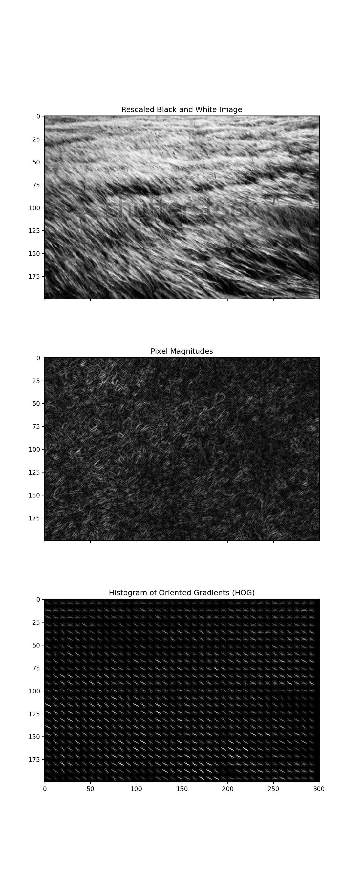
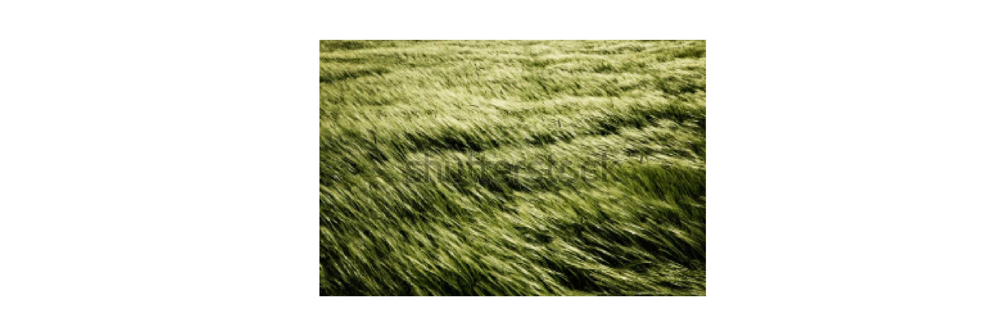

Warning: Removed 1 row containing missing values or values outside the scale range
(`geom_bar()`).
Removed 1 row containing missing values or values outside the scale range
(`geom_bar()`).
Removed 1 row containing missing values or values outside the scale range
(`geom_bar()`).
Removed 1 row containing missing values or values outside the scale range
(`geom_bar()`).
histogram_points_nine = []high_val =10# for i in range(0, height, high_val):# temp = []# for j in range(0, width, high_val):# magnitude_values = [[mag[i][x] for x in range(j, j+high_val)] for i in range(i,i+high_val)]# angle_values = [[theta[i][x] for x in range(j, j+high_val)] for i in range(i, i+high_val)]# for k in range(len(magnitude_values)):# for l in range(len(magnitude_values[0])):# bins = [0.0 for _ in range(number_of_bins)]# value_j = calculate_j(angle_values[k][l])# Vj = calculate_value_j(magnitude_values[k][l], angle_values[k][l], value_j)# Vj_1 = magnitude_values[k][l] - Vj# bins[value_j]+=Vj# bins[value_j+1]+=Vj_1# bins = [round(x, 9) for x in bins]# temp.append(bins)# histogram_points_nine.append(temp)# # print(len(histogram_points_nine))# print(len(histogram_points_nine[0]))# print(len(histogram_points_nine[0][0]))
epsilon =1e-05# feature_vectors = []# for i in range(0, len(histogram_points_nine) - 1, 1):# temp = []# for j in range(0, len(histogram_points_nine[0]) - 1, 1):# values = [[histogram_points_nine[i][x] for x in range(j, j+2)] for i in range(i, i+2)]# final_vector = []# for k in values:# for l in k:# for m in l:# final_vector.append(m)# k = round(math.sqrt(sum([pow(x, 2) for x in final_vector])), 9)# final_vector = [round(x/(k + epsilon), 9) for x in final_vector]# temp.append(final_vector)# feature_vectors.append(temp)# # print(len(feature_vectors))# print(len(feature_vectors[0]))# print(len(feature_vectors[0][0]))
4.11 Generate HOG Image
img = imread("images/living_lab_aerial/aerial_grass_living_lab_rotated.jpg")img = color.rgb2gray(io.imread("images/grass_image2.jpg"))aspect_ratio = img.shape[0]/img.shape[1]height =200width =int(height/aspect_ratio)# height = 128# width = 192# make sure the resized is in sample ball park as the original aspect ratio, # that way the angles don't get squishedresized_ratio = height/widthresized_img = resize(img, (height, width))plt.axis("off")
from skimage import color, io, exposurefrom skimage.transform import resizeimport matplotlib.pyplot as pltfrom skimage.feature import hog# Load the image and preprocess itimg = color.rgb2gray(io.imread("images/grass_image2.jpg"))# img = color.rgb2gray(io.imread("diagnol_lines_flipped.jpg"))aspect_ratio = img.shape[0] / img.shape[1]height =200width =int(height / aspect_ratio)resized_img = resize(img, (height, width))plt.figure(figsize=(8, 20)) # Adjusted the figure size to accommodate the additional objectplt.imshow(resized_img, cmap="gray")plt.axis("off")
(-0.5, 300.5, 199.5, -0.5)
plt.show()
# Compute HOG featureshog_features, hog_image = hog(resized_img, orientations=9, pixels_per_cell=(8,8), cells_per_block=(10, 10), visualize=True)# Plot the imagesfig, (ax1, ax2, ax3) = plt.subplots(3, 1, figsize=(8, 20), sharex=True, sharey=True) # Changed 1, 2 to 3, 1# Plot the rescaled black and white imageax1.imshow(resized_img, cmap=plt.cm.gray)ax1.set_title('Rescaled Black and White Image')# Plot the mag objectax2.imshow(mag, cmap=plt.cm.gray) # Assuming mag is the object you want to insert#ax2.axis("off")ax2.set_title('Pixel Magnitudes')# rescale HOG for better viewing:hog_color_rescaled = exposure.rescale_intensity(hog_image, in_range=(0, 10))# Plot the histogram of oriented gradientsax3.imshow(hog_color_rescaled, cmap=plt.cm.gray)ax3.set_title('Histogram of Oriented Gradients (HOG)')plt.savefig("images/plots/rescaled_grass2_image_hog.png", dpi=300)plt.show()

from skimage import color, io, exposurefrom skimage.transform import resizeimport matplotlib.pyplot as pltfrom skimage.feature import hog# Load the image and preprocess itimg = io.imread("images/grass_image2.jpg")# img = color.rgb2gray(io.imread("diagnol_lines_flipped.jpg"))aspect_ratio = img.shape[0] / img.shape[1]height =200width =int(height / aspect_ratio)resized_img = resize(img, (height, width))bw_resized_image = color.rgb2gray(resized_img)plt.figure(figsize=(15, 5)) # Adjusted the figure size to accommodate the additional objectplt.imshow(resized_img, cmap="gray")plt.axis("off")
(-0.5, 300.5, 199.5, -0.5)
plt.show()

# Compute HOG featureshog_features, hog_image = hog(bw_resized_image, orientations=9, pixels_per_cell=(8,8), cells_per_block=(10, 10), visualize=True)# Plot the imagesfig, (ax1, ax2, ax3) = plt.subplots(1, 3, figsize=(25, 5), sharex=True, sharey=True) # Changed 3, 1 to 1, 5# Plot the rescaled input imageax1.imshow(resized_img, cmap=plt.cm.gray)ax1.set_title('Rescaled Input Image')# Plot the pixel magnitudesax2.imshow(mag, cmap=plt.cm.gray) # Assuming mag is the object you want to insertax2.set_title('Pixel Magnitudes')# Plot the histogram of oriented gradientshog_color_rescaled = exposure.rescale_intensity(hog_image, in_range=(0, 10))ax3.imshow(hog_color_rescaled, cmap=plt.cm.gray)ax3.set_title('Histogram of Oriented Gradients (HOG) Image')# Plot the histogram of oriented gradients# angle_hist = io.imread("images/grass2_angles_histogram.jpg")# resized_hist = resize(angle_hist, (height, width))# ax4.imshow(resized_hist, cmap=plt.cm.gray)# ax4.set_title('Angle Histogram')# # # Plot the polar plot# polar_plot = io.imread("images/grass2_polar_plot.jpg")# resized_polar = resize(polar_plot, (height, width))# ax5.imshow(resized_polar, cmap=plt.cm.gray)# ax5.set_title('Polar Plot')plt.savefig("images/plots/rescaled_grass2_image_hog.png", dpi=300)plt.show()